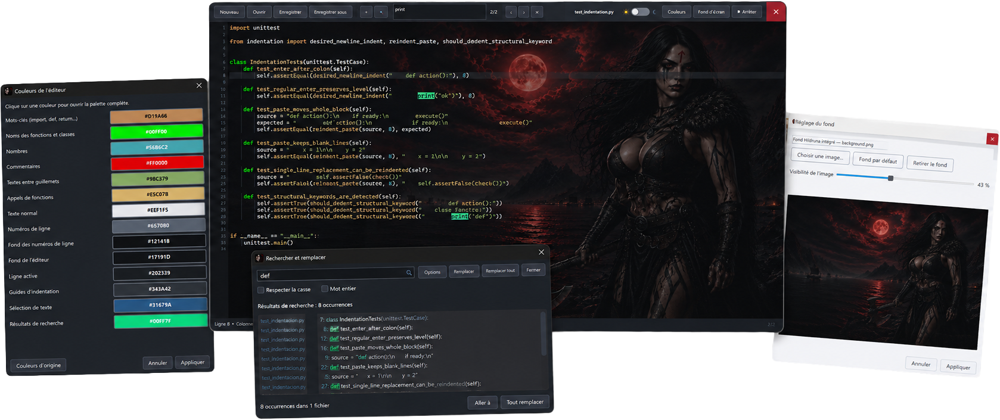

Python files
Create, open and save .py files directly, including from Windows “Open with”.

A fast, elegant Python editor with smart automatic indentation, designed to keep coding simple: open, write, customize and run.

Create, open and save .py files directly, including from Windows “Open with”.
Syntax colours, line numbers, indentation guides and automatic middle-click scrolling.
Launch your script and follow its output in the integrated console.
Full colour palette, light and dark themes, and a customizable wallpaper.
The interface automatically follows your system language and remains manually selectable.
No account, ads, tracker or data collection. Your code stays on your computer.
Hildruna focuses on the actions that matter. It launches quickly, remains readable and never hides a simple command beneath endless menus.
Available today, free foreverChoose the version that suits you: the portable ZIP version or the simplified installation from the Microsoft Store.